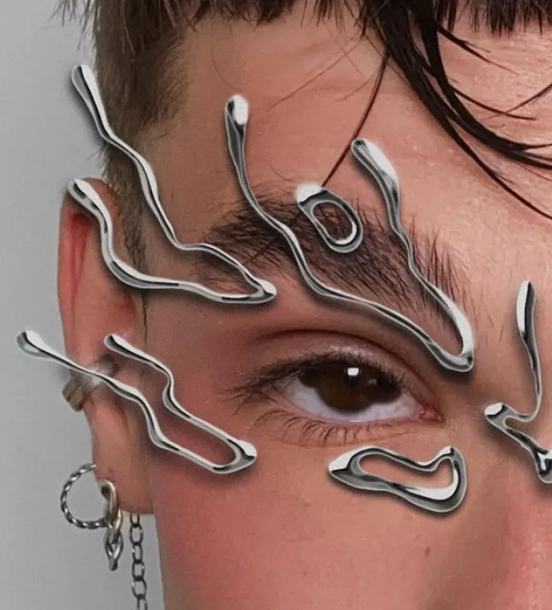
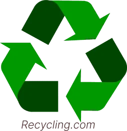
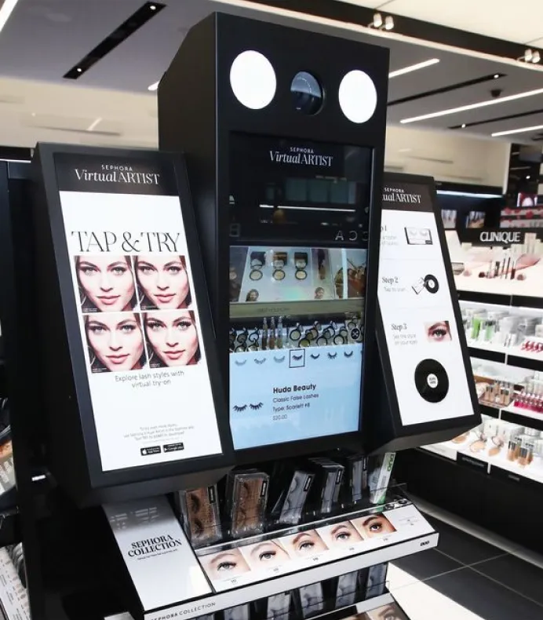

Le futur du maquillage : Quand le virtuel supplante le physique
Explorez comment la réalité augmentée et le maquillage virtuel révolutionnent l'industrie de la beauté, offrant une alternative écologique et interactive aux cosmétiques traditionnels.
Par Alice Frelin - Temps de lecture : 2min
Publié le 22 octobre 2024 à 00h30
Id: 291279453 sur Xiahongshu©
Une révolution technologique
Dans un futur proche, le maquillage physique pourrait être relégué au rang de pratique archaïque.
L'avènement du maquillage virtuel et de la réalité augmentée transforme radicalement notre approche de la beauté, reléguant potentiellement les produits cosmétiques traditionnels au statut de curiosités historiques.
Les tubes de mascara, les palettes d'ombres à paupières et les rouges à lèvres, jadis indispensables, pourraient bientôt sembler aussi désuets que les perruques poudrées du 18e siècle.
Le maquillage pourrait bientôt ressembler à ceci :
@wraaase sur Instagram©
Vers une beauté durable
La technologie de réalité augmentée permet désormais de modifier instantanément notre apparence sans appliquer le moindre produit sur notre peau, offrant une liberté créative sans précédent.
Pourquoi passer des heures à se maquiller quand un simple balayage sur un écran peut offrir un teint parfait en quelques secondes ?
Le maquillage virtuel s'inscrit dans une démarche écologique, répondant aux enjeux de durabilité qui préoccupent de plus en plus les consommateurs, comme la réduction des déchets d’emballage.
Une technologie pour tous
L'interactivité offerte par le maquillage virtuel ouvre de nouvelles possibilités d'expression personnelle. Les utilisateurs peuvent expérimenter une infinité de looks en temps réel, partager leurs créations instantanément sur les réseaux sociaux, et même collaborer virtuellement avec des artistes maquilleurs du monde entier.
L'inclusion est un autre aspect révolutionnaire du maquillage virtuel. Il permet à tous, indépendamment de leur type de peau, de leurs allergies ou de leurs compétences en maquillage, d'accéder à une palette infinie de possibilités esthétiques.
Cependant, ce basculement vers le virtuel soulève des questions:
Cette démocratisation de la beauté pourrait transformer profondément notre perception des normes esthétiques.
Le futur du maquillage virtuel promet également une personnalisation poussée à l'extrême. L'intelligence artificielle pourrait analyser notre humeur, notre tenue, ou même l'événement auquel nous nous rendons pour suggérer le maquillage virtuel parfait.
Cette fusion entre technologie et beauté ouvre la voie à une nouvelle ère où l'expression de soi n'a plus de limites.
Testeur de maquillage en réalité augmentée :
Cependant, ce basculement vers le virtuel soulève des questions
Comment préserver l'authenticité dans un monde où l'apparence peut être modifiée d'un clic ? Quel sera l'impact de cette virtualisation de la beauté sur notre estime de soi et notre rapport au corps ?
Alors que nous nous dirigeons vers cette révolution beauté, une chose est sûre : le maquillage virtuel n'est pas qu'une simple tendance, mais bien le futur de l'industrie cosmétique, redéfinissant nos concepts de beauté, de créativité et d'expression personnelle.